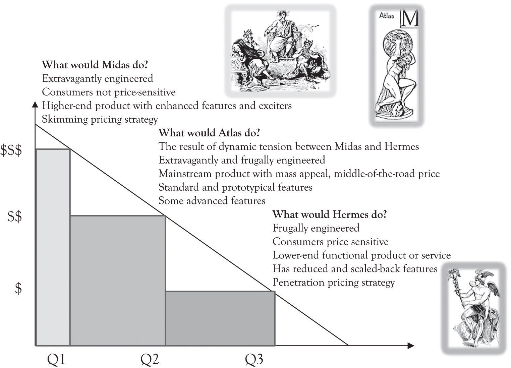

In their book on developing creative approaches for solving problems, Barry Nalebuff and Ian Ayres describe the “What Would Croesus Do?” approach.Nalebuff and Ayres (2003), also see Why not? About the book. Also visit Wikipedia. The gist of the approach is to consider how a consumer would solve a problem when he or she has unlimited resources. Need tech support, have the tech sit outside your office, and enter when called. Bored, become a cosmonaut. This approach can help to identify high-end products and services for the consumer who is not price-sensitive and is interested in many different features (see Figure 4.2 "Dynamic Tension Between Midas and Hermes Leads to Atlas Products"). We have renamed Croesus to Midas products because it is easier to remember and because it imparts a very colorful and explicit image of high-end features. Midas products and services are designed for consumers who are not price-sensitive and demand high-end features. Products that are designed with high-end features for individuals who are affluent or individuals who are simply interested in high-end products are designed using extravagant engineering. Extravagant engineering is less concerned with costs and more concerned with using new technology and concepts to develop innovative and perhaps even radical products and services. In general, products and services that are extravagantly engineered contain advanced features and attributes.
Figure 4.2 Dynamic Tension Between Midas and Hermes Leads to Atlas Products
Pricing high-end Midas products and services is tricky and very important. The goal is not only to cover variable costs but also to make a profit. There is more at stake with Midas products. Another objective is to get consumers to focus on the attributes of a Midas product that distinguish it from other products. The point is to determine what product features customers value the most. This is accomplished partly by marketing research but also through economic experiments in the form of introducing products with different features and observing buying behavior. Bertini and Wathieu have identified several strategies that can stop consumers from fixating on price and focus on product features.Bertini and Wathieu (2010). One noteworthy approach is to willfully overprice the product in order to stimulate curiosity. It appears that some consumers are more inclined to analyze product features and even buy a product when there is a high price premium in the 30–80% range.
There is a part of the demand curve where the consumers are price-sensitive. This segment could include students, seniors, and, in general, individuals with low levels of discretionary income or individuals who are truly value-conscious. In designing products and services for this group, you can use the “What would Hermes Do?” approach. Hermes was the god of the traveler, the shepherd, the athlete, the merchants, the cunning, and was linked to invention and commerce. We are now designating Hermes as the patron for the part of the demand curve that does not have a patron.I realize that there are many patrons for this large segment of humanity. The goal is to have a question for the bottom of the pyramid. Please see Prahalad (2006) and many others who have been committed to this group. Hermes products and services are designed for consumers who are price-sensitive and demand features that are functional for the task at hand. Hermes products and services are still functional, but they have reduced and scaled-back features. There are a variety of very interesting products and services that have been developed for Hermes customers occupying the price-sensitive end of the demand curve. An important reason for offering Hermes products and services is to acquire customers who might eventually become Midas consumers. For example, students become less price-sensitive as they enter the work force and generate more discretionary income. Consumers’ tastes can also change as they become more familiar with a product line or because they get caught up in the hype around fashionable product. Designing Hermes products requires skills in frugal engineering.
Frugal engineering is the ability to design useful low-cost products and services for price-sensitive consumers.Athreye and Kapur (2009). Frugal engineering is the clean slate approach for engineering and designing products and services. The first step is to identify the fundamental or essential functions of a product or service. The next step is to concurrently design or redesign the existing product or service and the manufacturing process so that the process is very efficient and the components and materials used are inexpensive. The individuals using Hermes products can be price-sensitive because they are thrifty, but they can also be Hermes customers because they are part of the approximately 4 billion people in the world with a purchasing power of $1,500 per year or consumers who are looking for a bargain.
Midas and Hermes products have an important role in developing new ideas for products and services for the middle of the demand curve. Midas gives product developers the license to create ideas that are unique and perhaps superfluous. Hermes products and services establish a minimal baseline for a product or service with the additional prompting of being inexpensive to produce. Hermes products should be less expensive to produce because they are meant to attract price-sensitive customers.